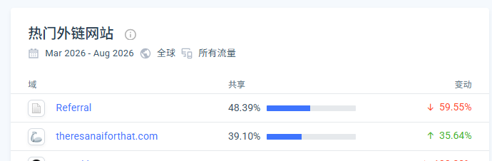
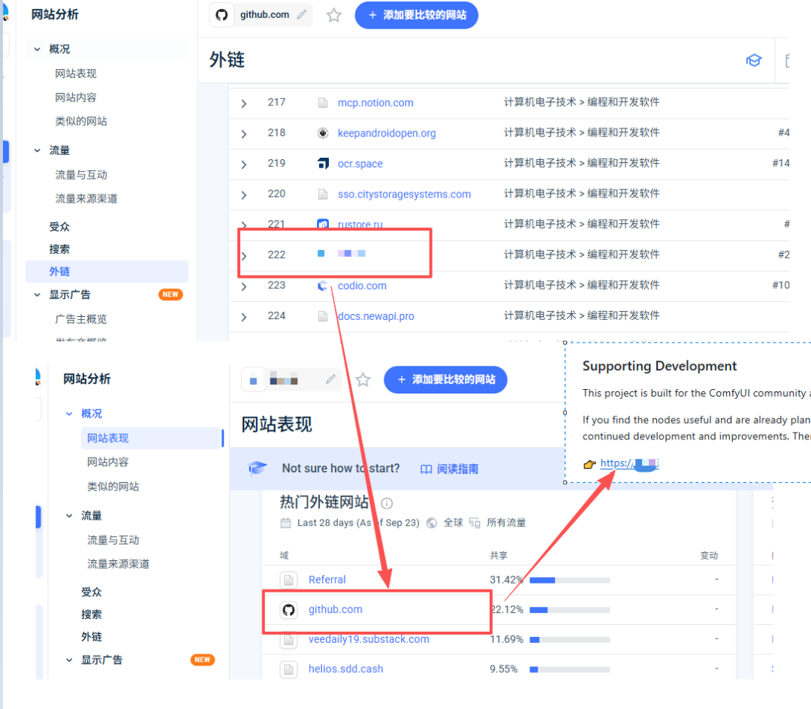
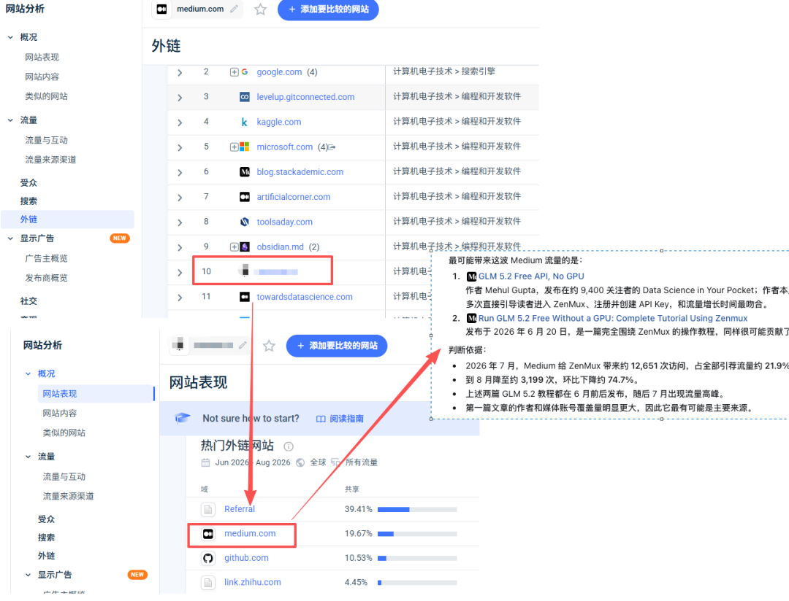

早上好，朋友们！ 之前分享过 taaft 获取流量，可以用同样的思路在其他平台去做类似的操作获取 。但是会有个问题，就是去哪里找这样的平台，应该怎么去做。今天分享一下怎么去挖这些渠道和这些渠道的打法。
每个竞品都注意异常流量
在看竞品的时候，可以留意一下热门外链网站，尤其是占比的一些异常值，如果某个渠道，竞品的流量来源占比很高，就值得去研究一下。比如下面就是我某个网站的异常值，所以可以看出来我这个网站是从taaft 是拿到很多流量的，就可以基于这些异常值去深挖一下。

通过流量渠道，挖掘流量打法
上面这种看竞品的方式，可能会看运气，有的有这种异常值，有的又没有，这个时候其实可以通过流量渠道去反推。
比如我们想要学习从github 获取流量，就可以去similarweb 看github 的外链出站流量，比如这里我们发现了某个api 平台，去这个平台也能看到流量的热门外链网站是github，说明这类api 平台可能github是一个不错的流量来源渠道，这个时候可以用codex 帮你去挖一下是怎么引流的。你就可以去学习一下github 的流量打法。

再比如，我们知道medium 写文章可以引流，但是我们不知道要怎么写，想要找对标，这个时候就可以去看看medium 的出站流量，找到一些合适的对标网站，再看这个对标网站外链的大部分流量也是来自medium，这个时候codex 去挖一下，大概率都能找到对应的文章，你就可以去学习一下medium这个流量渠道的玩法。

我是赫兹，专注网站出海，持续分享网站出海内容。新朋友可以看看之前的文章合集；想系统学习，也推荐关注哥飞老师，我很多方法是向他学习的